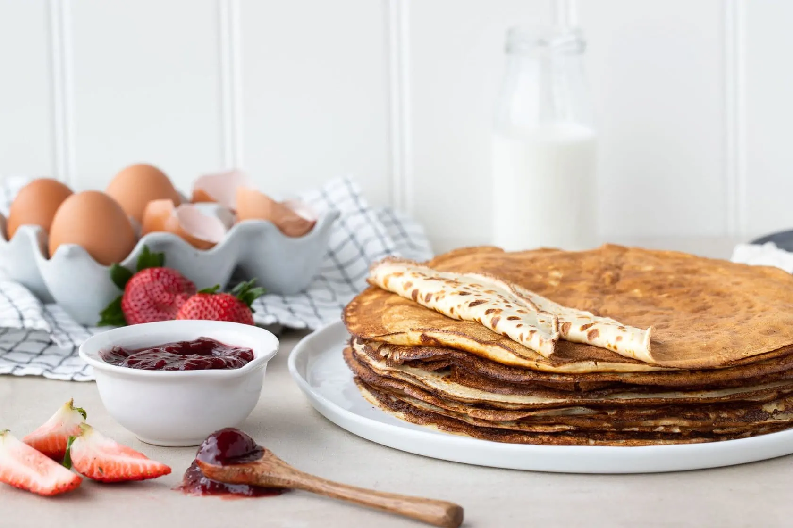

Pannkakor

Beskrivning
Gott recept för tunna och krispiga pannkakor.
Perfekt för trötta söndagsmorgonar.
Ingredienser
- 2 dl mjöl
- 4 ägg
- 8 dl mjölk
Instruktioner
- Vispa ihop ägg och mjölk i en bunke.
- Skikta långsamt i mjölet under rörning.
- Häll smet så att det täcker stekpannan och stek sedan på medel värme.